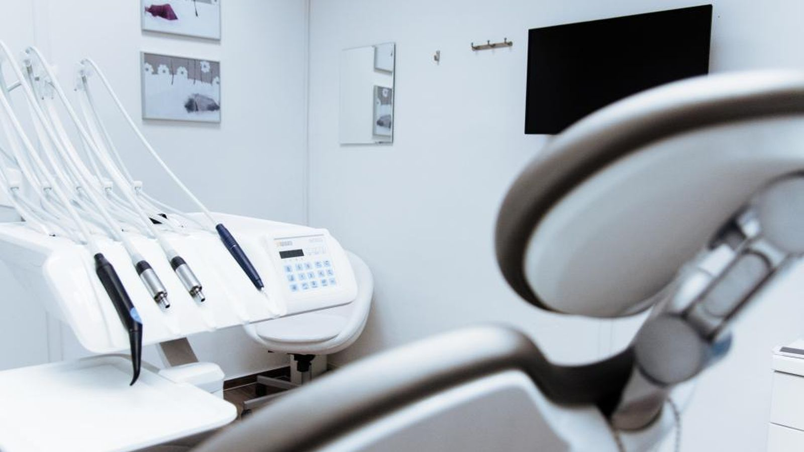
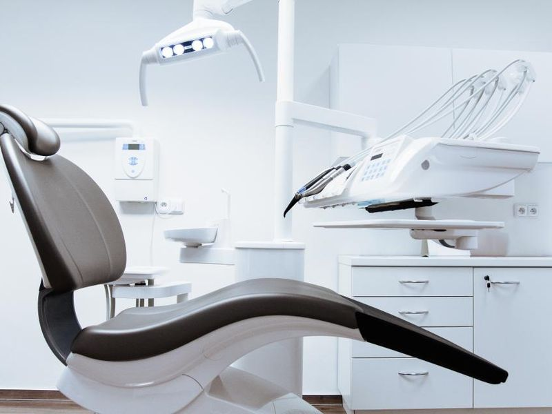
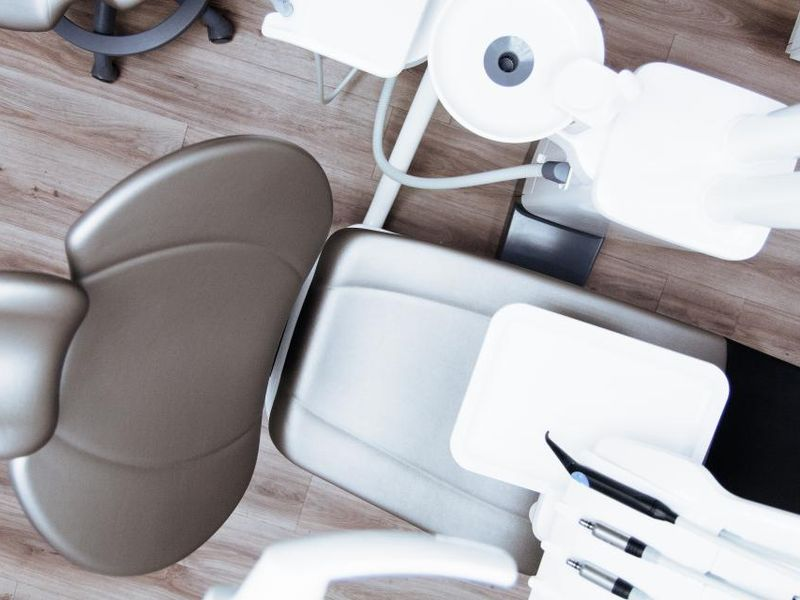

진료과목
과잉 진료를 하지 않는 것을 원칙으로 합니다.

충치, 잇몸, 사랑니. 먼저 상태부터 설명드립니다.

시작 전에 기간과 비용을 모두 알려드립니다.
6개월에 한 번, 문자로 알려드립니다.
진료 절차
처음 오신 분은 30분 정도 걸립니다.
어디가 불편한지, 지금까지 어떤 치료를 받으셨는지 여쭙습니다.
5분파노라마 엑스레이를 찍고 구강 상태를 봅니다. 필요하면 3D 촬영을 합니다.
10분찍은 사진을 화면에 띄워 같이 보면서 설명드립니다. 치료 안 해도 되는 것은 안 한다고 말씀드립니다.
10분기간과 비용을 종이에 적어 드립니다. 그날 결정하지 않으셔도 됩니다.
5분진료시간
일요일·공휴일은 쉽니다.
| 월 | 화 | 수 | 목 | 금 | 토 | |
|---|---|---|---|---|---|---|
| 오전 | 09:30–13:00 | 09:30–13:00 | 09:30–13:00 | 09:30–13:00 | 09:30–13:00 | 09:30–13:00 |
| 오후 | 14:00–18:30 | 14:00–18:30 | 14:00–21:00 | 14:00–18:30 | 14:00–18:30 | 휴진 |
수요일은 밤 9시까지 봅니다. 직장 다니시는 분들을 위해 열어 두었습니다. 토요일은 점심시간 없이 오전만 진료합니다. 점심시간은 평일 13:00–14:00 입니다.
의료진
수납·상담·치료를 같은 사람이 끝까지 봅니다.
비용 안내
건강보험이 안 되는 항목은 따로 표시했습니다.
자주 묻는 질문
예약 문의
확인 후 연락드려 시간을 확정합니다.